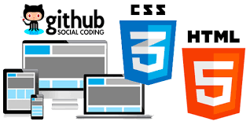

Objetivos del OVI
- Dar a conocer las tematicas que se aprendieron en el transcurso del curso de Diseño de Sitios Web
- Mostrar de manera didactica todos los items comprendidos del curso por medio de videos, escritos etc.
- Generar una guia sobre temas como Git y GitHub, Html5 y Css3
Objetivos del Curso
- Revisar y apropiar el conocimiento adquirido en los diferentes temas del curso, generando bases fundamentales.
- Dar a conocer las tematicas que se aprendieron en el transcurso del curso de Diseño de Sitios Web